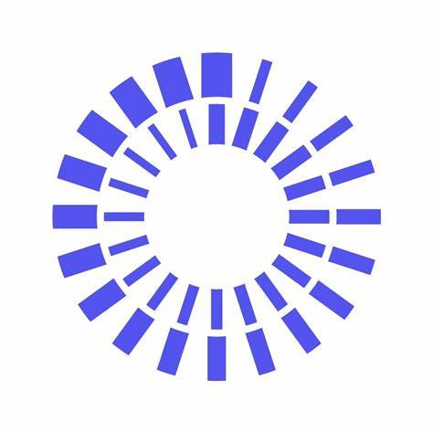

¿De que trata el programa? Imagina un viaje donde no solo aprenderás sobre Ingeniería de Software, sino que te sumergirás en la creación de soluciones tecnológicas que desafían los límites. Nuestro programa, con más de 40 años de experiencia, y con el reconocimiento y apoyo de las grandes compañías de tecnología más importantes del mundo, no solo te da conocimientos; te convierte en un creador de futuro, dotándote de habilidades avanzadas y certificadas con empresas como Microsoft, Amazon, Globant, Qubika, GreenSQA, Encora entre otras.
Plan de estudio de icesi:

El valor de la carrera en la unicatolica es de $2.466.367
Este programa tiene una duración de 9 semestres, es decir 4 años medio y se ofrece en modalidad presencial.
El programa de Tecnología en Desarrollo de Software de la universidad icesi cuenta con el Registro Calificado otorgado por el Ministerio de Educación Nacional (MEN) mediante la Resolución 8987 del 5 de junio de 2018, nose asta cuando tenga vigencia.

Como graduado de Ingeniería de Sistemas de la
Universidad Icesi, estarás preparado para hacer una
diferencia significativa en tu campo. Tu formación te
permitirá:
Resolver problemas de ingeniería de manera
efectiva, empleando tu conocimiento
profesional y habilidades sociales para proponer
soluciones innovadoras y creativas, ejerciendo
liderazgo y colaborando eficazmente en equipos
multidisciplinarios.
Desarrollar sistemas de software, especialmente
sistemas transaccionales y aplicaciones web
avanzadas.
Caracterizarte por tu autonomía, innovación,
flexibilidad y ética, tomando decisiones
informadas y considerando los impactos
económicos, sociales, culturales y ambientales
de tu ejercicio profesional.
La Universidad Icesi ofrece diferentes tipos de becas para estudiantes de desarrollo de software, que pueden cubrir entre el 10% y 100% del valor de la matrícula, basándose en criterios como excelencia académica, condición socioeconómica, talento deportivo o artístico, y convenios empresariales. Los requisitos generales incluyen mantener un buen promedio académico, demostrar necesidad económica y compromiso estudiantil